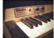

<tr>
<td></td>
<td class="description">The Rhodes piano is an electro-mechanical piano, invented by Harold 
Rhodes during the fifties and later manufactured in a number of models ...</td>
<td>$1400</td>
</tr>